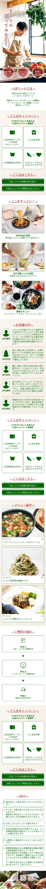

制作範囲 Range
ディレクション / デザイン
使用ツール Tool
Figma / VS Code (HTML / CSS / JS)
制作期間 Period
3ヶ月間
制作メンバー Member
7名 後6名
サービス設定 Premise
- 30分以内の短時間で本格的な料理を自作できるミールキットを提供。
- 必要な材料が適量届くため食品ロスを抑えられ、手軽ながらも「自分の手で作る楽しさ」や「SNS映えする完成度」を両立させているのが特徴。
ターゲット Target
自炊への関心が高い20代〜30代前半の単身サラリーマン
仕事が忙しく献立作成や買い物に負担を感じつつも、市販の惣菜では満足できず
料理をストレス解消や自己表現の場として大切にしたい層
目的 Purpose
新ターゲット層の認知獲得と新規入会キャンペーンの促進。
ユーザーの反応を詳細に分析し、単身世帯や若い男性という新たなセグメントへの有効性を検証する実験的な狙い。
情報設計 Information
スマホ閲覧に最適化し、スクロールだけで魅力が伝わる構成を意識。
冒頭で憧れのライフスタイルを提示し、具体的なメリット（時短・包丁不要）を伝えた後、同世代の「お客様の声」で信頼感を醸成。
最後に入会特典やQ&Aを配置し、迷わず申し込める導線を構築。
デザイン Design
「簡単・手軽・おしゃれ・生活」をキーワードに、ビジネスマンの日常を彩る「ご褒美時間」を表現。
#FFFFFF
#006400
清潔感のある白をベースに、知的で洗練された印象を与える明朝体を活用。
配色は、信頼感のある紺と温かみのある橙をアクセントとして採用。
その他 Others
下に添付した画像は、スマホのデザイン完成稿です。
